Map Action Impact Engine
System Architecture & Multimodal Integration Flow
flowchart LR
%% Styling
classDef mobile fill:#334155,stroke:#94a3b8,stroke-width:2px,color:#fff,rx:10,ry:10;
classDef ai fill:#4c1d95,stroke:#8b5cf6,stroke-width:2px,color:#fff,rx:10,ry:10;
classDef geo fill:#064e3b,stroke:#10b981,stroke-width:2px,color:#fff,rx:10,ry:10;
classDef core fill:#7c2d12,stroke:#f97316,stroke-width:2px,color:#fff,rx:10,ry:10;
classDef output fill:#0c4a6e,stroke:#0ea5e9,stroke-width:2px,color:#fff,rx:10,ry:10;
%% Mobile Input
subgraph Mobile["📱 Mobile Field App"]
direction TB
P["📸 Photo"]:::mobile
G["📍 GPS"]:::mobile
A["🎙️ Voice Note
(Bambara/FR/Fulfulde)"]:::mobile
end
%% AI Processing
subgraph AI["🧠 AI Processing Layer"]
direction TB
V["👁️ Vision Engine
(Classification, Spread Vectors)"]:::ai
NLP["🗣️ ASR/NLP Engine
(Speech-to-Text & Translation)"]:::ai
CTX["🔄 Context Aggregator"]:::ai
end
%% Geo Data
subgraph Data["🌍 Geospatial Feeds"]
direction TB
OSM[("🗺️ OSM Infrastructure")]:::geo
SAT[("🛰️ Satellite Land Use/NDVI")]:::geo
MET[("⛅ Live Weather API")]:::geo
end
%% Core Engine
subgraph Engine["⚙️ Core Impact Engine"]
direction TB
PHYS["📏 Dynamic Physics
Calculates Impact Radii"]:::core
VULN["👥 Vulnerability Scorer
Demographics & POIs"]:::core
end
%% Output
subgraph Out["📊 Decision Output"]
direction TB
DASH["🖥️ Unified Dashboard
Quantified Impact"]:::output
CHAT["💬 Expert LLM Advisor
Streaming Recommendations"]:::output
end
%% Flow
P -->|Image| V
A -->|Audio| NLP
V --> CTX
NLP --> CTX
G --> OSM
G --> SAT
G --> MET
CTX -->|Vectors| PHYS
SAT -.->|Slope| PHYS
MET -.->|Wind/Rain| PHYS
PHYS -->|Dynamic Radius| VULN
OSM -.->|Buildings| VULN
SAT -.->|Density Est.| VULN
VULN -->|Exposed Pop.| DASH
VULN -->|Metrics| CHAT
CTX -->|Translated Audio Context| CHAT